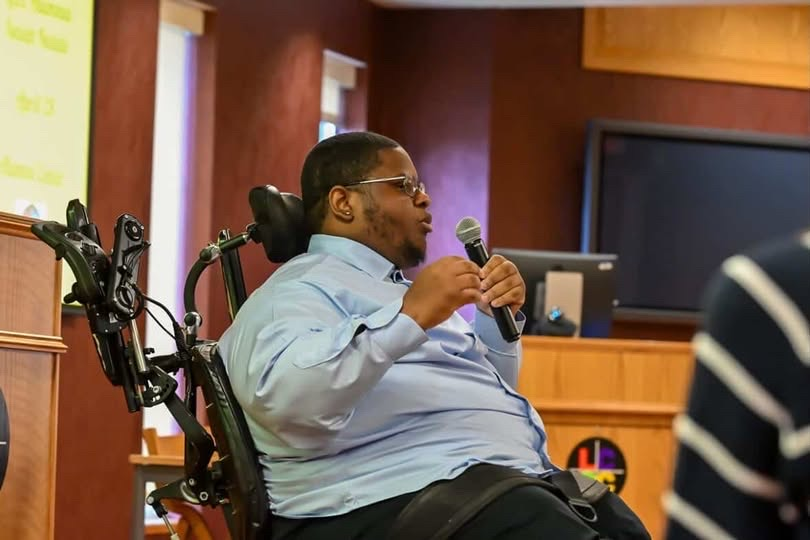
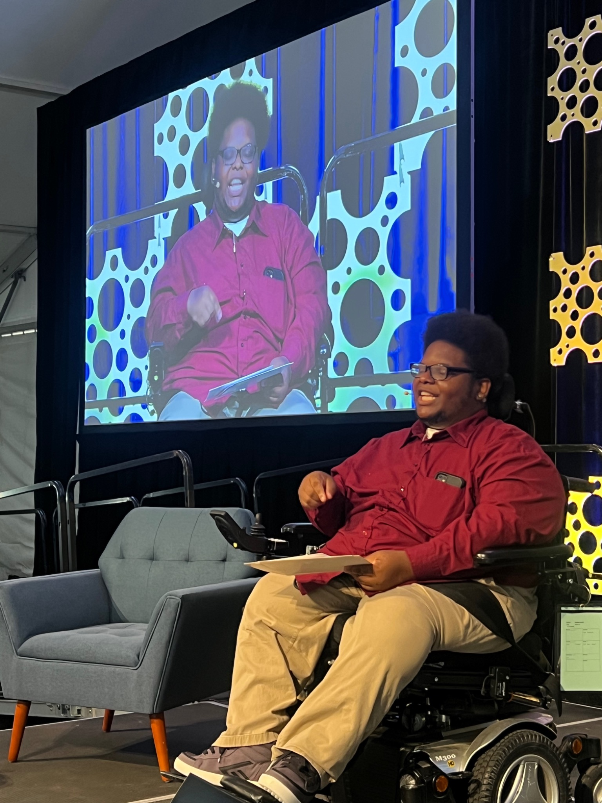

When the situation is out of our control, how do we keep our first reaction from making our next decision? A heavy workload, a difficult conversation, or an unexpected change can leave us frustrated and ready to react. In Conquer & Control, Isaiah shares personal stories and three steps—Notice, Sort, Choose—to help us pause, work out what we can influence, and make our next useful decision.
Isaiah Natale knows what it feels like to want control over a situation you cannot change.
After a car accident left him paralyzed at age four, Isaiah had to learn new ways to do everyday things. Learning to adapt physically was one challenge. Learning to recognize his anger, ask for help, and think through his decisions took years of work.
He speaks honestly about adaptation, mental health, recovery, and returning to college. Each experience brings the conversation back to a question his audience can use: when the situation is out of our control, how do we keep our first reaction from making our next decision?
Through Conquer & Control, Isaiah helps people recognize the moment when stress or frustration starts to drive their actions. His message gives audiences a way to pause, understand what they are feeling, and focus on a decision they can actually make.
Whether someone is overwhelmed at work, facing a change they did not choose, or struggling with a difficult conversation, NOTICE, SORT, and CHOOSE gives them a way to think through what happens next. Isaiah combines his stories with familiar situations and time for audiences to reflect on their own challenges.
His goal is for people to leave with something they can use: notice what you are feeling, sort what you can control, and choose your next useful decision—then act on it.

When the situation is out of our control, how do we keep our first reaction from making our next decision? When pressure builds, it is easy to snap at a coworker, get stuck trying to change something that has already happened, or feel unsure of what to do next. Isaiah knows those patterns from his own life. Through honest stories and everyday examples, he walks audiences through Notice, Sort, Choose: recognizing what they are feeling, separating what they cannot control from what they can, and taking one useful action. Audiences are invited to think about a challenge of their own and consider how they could approach it differently.
Pause and notice what you are feeling. Recognize signs of stress and name the emotion before reacting.
Separate what is outside your control from what you can control. Identify one thing you can still influence.
Choose your next useful decision and put it into action. Take one step, adjust your approach, or ask for help.
“Isaiah Natale's motivational speech was nothing short of inspiring. His ability to captivate an audience with his personal story of perseverance and resilience was truly remarkable.”
Krista BerardelliDirector of Business Development | Real Estate Agent | Influencer“I recently had the opportunity to listen to Isaiah's motivational speech, and he was truly inspiring… I wholeheartedly recommend Isaiah to anyone seeking perspective, inspiration and motivation.”
Carry GerberNonprofit Executive Leader | Marketing & Advancement | Brand Growth & Stakeholder Engagement“He is a naturally gifted speaker. He shared his journey and struggles in a way that kept the audience listening and engaged… I highly recommend Isaiah if you're looking for a motivational speaker.”
Vicki DouléLehigh Valley Executive and Vice President, Community Impact & Market Development at Capital Blue CrossIsaiah Natale was featured by Lehigh Valley Public Media, highlighting his journey after a life-changing spinal cord injury and how he transformed adversity into a mission to inspire others.
The feature shares Isaiah's story of resilience, the challenges he overcame, and how those experiences became the foundation of his keynote message, Conquer & Control.

KEYNOTE + MEET & GREET + Q&A
Available for virtual and in-person keynotes for organizations, schools, universities, healthcare teams, leadership programs, conferences, and community events.
LET'S CONNECT →